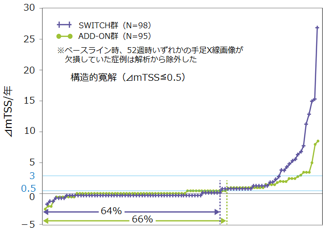

アクテムラはMTX併用、非併用ともに高い構造的寛解率が確認されている（SURPRISE Study）
- ●副次的評価項目②：52週時のmTSSの変化（⊿mTSS）
- ●構造的寛解率（⊿mTSS≦0.5）はADD-ON群66%、SWITCH群64%と同様であった（p=0.92、χ2検定）
- ●CRRP※（⊿mTSS ≧ 3）の割合はADD-ON 群7%、SWITCH 群15%であった（p=0.07、χ2検定）

※CRRP
（clinically relevant radiographic progression）：mTSS がベースラインから3ポイント以上増加すること
アクテムラの関節破壊抑制効果は臨床でも
MTX有無にかかわらず確認されている
Adapted from Kaneko Y. et al. Ann Rheum Dis(2016) 75:1917-1923
利益相反：中外製薬より講演料・研究助成金を受領している共著者も含まれます